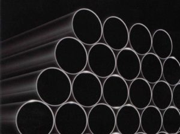
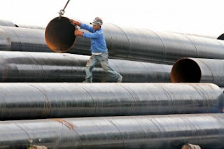

Jual Genteng Metal di Magelang ☎ 0822 4582 0777 (Rinanti)
Atap adalah hal yang paling penting saat membangun sebuah bangunan. Atap adalah bagian penting sebuah bangunan yang fungsinya untuk menaungi sebuah bangunan. Layaknya projek pembangunan yang magak di tengah jalan karena tidak mempunyai atap yang bisa dipakai di atasnya. Salah satunya adalah atap galvalum, atap lengkung maupun genteng metal. Ini dikarenakan setiap bangunan tentunya membutuhkan atap sebagai penutup bagian atas. Banyak sekali jenis ragam atap mulai dari yang konvensional sampai modern yang dapat digunakan dalam sebuah pembangunan.
Distributor & Supplier Genteng Metal

Kami adalah distributor genteng metal Magelang, tersedia berbagai ukuran dan varian genteng metal Magelang. Secara sederhana genteng metal Magelang adalah salah satu jeni genteng yang terbuar dari kumpulan berbagai bahan logam dan memiliki ciri kas mengkilat, ringan dan tahan lama. Genteng metal adalah genteng yang terbuat dari campuran dari bahan bahan yang terbuat dari logam, seperti zinc, baja ringan dan galvanis. Secara sederhana genteng metal Magelang adalah salah satu jenis genteng yang terbuar dari kumpulan berbagai bahan logam dan memiliki ciri kas mengkilat, ringan dan tahan lama. Dengan berbagai keunggulan yang sudah saya jabarkan diatas, maka apalagi yang anda tunggu untuk mendapatkannya? Segera dapatkan genteng metal Magelang tersebut di official situs kami di dis.or.id dan dapatkan penawaran menarik. Genteng metal dinilai lebih praktis dan lebih awet. Jika anda masih agu lagi, kami sarankan untuk anda untuk mengubungi kami secara langsung.
Info Pemesanan Selengkapnya
Google Maps: https://www.google.com/maps/d/u/0/viewer?mid=18K_Vf8GKnjN9AtE2jUMATDSYvScojDst&ll=-7.269373870070218%2C112.655575&z=16
Note: https://www.facebook.com/notes/distributor-of-industrial-supply/pabrik-supplier-genteng-metal/1783191985314014/
Event: https://www.facebook.com/events/1480458558737554/
Portfolio Produk: https://www.facebook.com/pg/DistributorOfIndustrialSupplyDIS/photos/?tab=album&album_id=1683750531924827
Distributor & Supplier Besi Beton

Beragam jenis beton tersebut bisa diaplikasikan untuk berbagai kebutuhan pembangunan. Besi beton sendiri adalah material yang biasa digunakan dalam konstruksi dengan kekuatan yang sangat besar serta tahan terhadap berbagai guncangan dan tekanan. Pendidikan sangat penting karena digunakan dalam berbagai bentuk struktur bangunan baik bangunan kecil maupun bangunan besar seperti jembatan, Bendungan, terowongan dan masih banyak lagi. Berikut fungsi dan kelebihan dari besi beton yaitu memiliki tekanan yang kuat dan lebih tinggi dibandingkan dengan bahan lainnya, tahan terhadap api dan air dan juga memiliki struktur terbaik pada bangunan jika banyak bersentuhan dengan air, memiliki struktur yang cukup kokoh, tidak memerlukan biaya pemeliharaan yang cukup tinggi, dapat dirakit dalam bentuk yang sangat beragam dan masih banyak lagi kelebihan yang bisa anda dapatkan dengan menggunakan Besi beton.
Besi beton terkenal sebagai bentuk besi yang memiliki kekuatan besar dan tahan terhadap berbagai guncangan dan tekanan.
Segera kunjungi dis.or.id untuk mendapatkan besi beton yang anda inginkan. Kualitas dan mutunya pun telah terjamin.
Distributor & Supplier Steel Grating

Plat Grating terbaru memiliki kualitas terbaik yang bisa digunakan untuk sarana pembangunan pada industri hingga pertambangan. Saat ini, Plat Grating bisa di dapatkan dengan mudah. Umumnya, Grating digunakan untuk kolam renang. Tetapi, jangan hanya memperhatikan harga karena Anda harus mempertimbangkan kualitasnya terlebih dahulu. Tentunya dengan berbagai model dan tipe yang beragam. Bahan yang berkualitas ini memudahkan para konsumen dalam melakukan pembangunan dengan memperoleh hasil maksimal.
Karena disana terdapat steel grating dengan harga yang sangat ekonomis pas dengan kantong anda. Memesan steel grating di dis.or.id pastinya anda tidak akan merasa rugi.
Distributor & Supplier Pipa (Hitam/Gas, Galvanis)

Manfaat dari pipa hitam galvanis memang banyak sekali untuk kebutuhan konstruksi bangunan. Karena kekuatan yang dimiliki olehnya, tak heran bila pipa hitam banyak digunakan pada kebutuhan konstruksi. Pipa hitam galvanis telah di produksi khusus untuk kebutuhan pertambangan minyak dan gas, maka tak heran bila banyak orang yang menyebut pipa hitam adalah pipa gas. Untuk itu, anda bisa aplikasikan pipa hitam di segala wilayah indonesia karena ia tahan korosi cuaca. Tentukan kebutuhan pipa hitam anda pada kami, tersedia ukuran ½ inc sampai 40 inc. Anda dapat mengkonsultasikan keperluan pipa hitam tersebut pada kami dan mengetahui informasi harganya lebih detail.
Distributor & Supplier Kawat Bronjong/Gabion

Kawat bronjong dikenal sebagai anyaman yang terbuat dari kawat di mana tujuannya agar tebing yang tinggi tidak longsor. Bentuknya sama seperti kawat pada umumnya. Hanya saja, karena ini berfungsi untuk mencegah erosi, maka kualitas kawat berbeda dengan kawat yang sering digunakan. Namun, ada juga kawat bronjong PVC yang dilapisi dengan plastik. Kawat ini berfungsi agar tidak terjadi gerusan akibat arus air yang mengakibatkan tiang penyangga rusak di mana hal ini bisa berakhir dengan rubuhnya jembatan. Tujuannya agar bebatuan tidak hancur karena terkena ombak terus menerus.
Jika anda sedang mencari kawat bronjong, anda bisa datang dan mengunjungi situs dis.or.id. Disana anda bisa mendapatka kawat dengan harga yang cukup terjangkau dengan kualitas terbaik yang dimilikinya. Karena disana anda akan mendapatkan penawaran mengenai kawat bronjong denga berbagai ukuran.
Distributor & Supplier WF H-beam

Terlebih saat ini zaman sudah serta praktis dan mudah. Besi jenis ini juga cocok untuk Anda pakai guna membangun rumah, industri, jalan raya, pagar, pabrik, dan masih banyak lagi lainnya. Entah dari sisi kekuatan tekan nya atau tariknya. Anda juga bisa lebih gampang saat memakai besi ini karena sifatnya yang tidak terlalu berat dan bisa dibilang ringan dengan komponen yang seimbang.
Saat membawanya pun Anda akan lebih mudah dan praktis.
Besi Wf berkualitas tinggi bisa anda dapatkan dengan sangat mudah di dis.or.id. Disana anda bisa mendapatkan besi tersebut dengan kualitas terbaik serta harga yang sangat terjangkau. Terdapat berbagai ukuran dari besi WF yang bisa anda jadikan pilihan sesuai dengan kebutuhan anda.
Distributor & Supplier Expanded Metal

Expanded metal ini bisa dibilang sebagai hasil dari kemajuan teknologi yang terbuat dari baja berkadar karbon rendah dengan kekuatan yang lebih tanpa harus di las serta tanpa menggunakan sambungan. Umumnya dipergunakan sebagai kawat parabola, speaker grill, kawat nyamuk dan lain sebagainya. Selain itu, Expended Metal juga dikenal mampu menahan beban berat, memiliki permukaan yang anti slip/tidak licin, dan juga dikenal tahan karat untuk material yang dari alumunium.
Kini anda bisa mendapatkan expanded metal dengan kualitas dan mutu yang telah terjamin di dis.or.id.
Distributor & Supplier Plat (Hitam, Kapal, Bordes, Strip)

Apabila anda saat ini sedang mencari tempat atau toko yang jual plat hitam , anda dapat menemukannya di toko besi terdekat. Dis.or.id menjual plat besi yang anda butuhkan dengan harga yang murah. Mahalnya harga tergantung dari ketebalan besi, motif, dan campuran bahan yang digunakan. Plat besi memang ada yang tipis dan tebal, perihal ukuran ini akan kita sampaikan secara detail pada topik yang berbeda.
Di dis.or.id, anda dapat mendapatkan nya dengan harga lebih miring dibandingkan dengan toko besi lain nya. Disana terdapat berbagai macam plat yang anda butuhkan dan pastinya dengan harga yang sangat terjangkau. Tak perlu khawatir harga, karena harga yang di patok pastinya sangat murah dan terjangkau.
Distributor & Supplier Floor Deck (Bondex)

Jika memilih menggunakan Floor Deck ini bisa langsung berfungsi juga sebagai bekisting permanen dan siap di cor dalam waktu singkat. Untuk bahan utamanya sendiri umumnya berasal dari plat baja jenis galvanized dilengkapi dengan tulang. Pemakaian dari floor deck juga bisa membuat proses pengerjaan dan pembuatan dak menjadi lebih mudah, cepat dan efisien.
Kini anda bisa mendapatkan floor deck berkualitas dan bermutu tinggi dengan hanya mengunjungi situs dis.or.id. Anda juga bisa langsung memesannya ataupun hanya ingin mengetahui detail harga yang di patok dari floor deck tersesbut. Pastinya dengan harga yang sangat terjangkau dan dengan mutu terbaik.
Distributor & Supplier Atap Galvalum

Dengan semakin panasnya bumi, maka di ruangan pun masih terasa suhu panas. Apalagi bila ruangan tersebut tidak dilengkapi pendingin ruangan.
Akan tetapi kelebihan kayu bila dibandingkan dengan atap galvalum adalah kayu memiliki nilai yang lebih tinggi daripada galvalum. Galvalum atau biasa disebut baja ringan, terbukti mempunyai banyak kelebihan jika dibandingan dengan kayu.
Besar kecilnya galvalum tergantung pada kebutuhan anda. Namun, banyak anggapan yang mengatakan bahwa memasang galvalum akan membuat rumah akan terasa panas dan berisik. Anggapan ini sangat keliru, karena galvalum bukanlah atap seng pada umumnya. Penggunaan galvalum terbilang lebih efektif bila dibandingkan dengan galvanis. Disini kami menyediakan galvalum yang tentunya sesuai kebutuhan dan dengan harga yang sangat kompromi khusus untuk anda yang membutuhkannya. Tapi kayu rentan dimakan oleh rayap.
Distributor & Supplier Atap Lengkung

Tidak terkecuali gudang, halte, maupun peneduh bagi kendaraan. Masing-masing atap mempunyai keunggulan dan kelemahan sendiri.
Bentuk dari setiap atap tersebut sangat beragam. Salah satu jenis atap galvalum yang sekarang sedang populer adalah atap lengkung. Seperti namanya, atap lengkung adalah atap yang bentuknya melengkung sehingga membuat bangunan yang dinaunginya terlihat megah.
Kekuatan dan keunggulannya kiat membuatnya semakin dicari orang. Maka sudah pasti bahwa kualitas atap tersebut sangat diragukan. Terkadang, atap bangunan mereka merupakan atap dengan jenis atap lengkung. Anda sudah berada di tempat yang tepat. Bila anda mencari atap galvalum dengan lengkungan yang unik tersebut. Cukup hubungi kontak yang tertera pada dis.or.id dan dapatkan harga terjangkau untuk anda. Kami merekomendasikan dis.or.id sebagai tempat untuk anda bisa mendapatkannya.
Distributor & Supplier Truss Canal C

Sudah tahukah anda apa yang dimaksud dengan galvalum? Galvalum memang istilah yang kerap kali kita dengar dan umumnya memang sangat erat kaitannya dengan baja. Kedua istilah tersebut merujuk pada sebuah benda yang sama. Besi kanal C bisa menjadi pilihan yang tepat bila anda ingin membangun rumah minimalis dengan desain modern. Satu untuk rangka dan satunya lagi adalah untuk atap. Silakan kunjungi web dis.or.id untuk info lebih lanjut mengenai kebutuhan anda. Kunjungi website dis.or.id untuk info lebih lanjut dan hubungi kontak yang tersedia sesuai dengan kebutuhan anda.
Distributor & Supplier Hollow Galvalum

Seperti yang telah saya tuliskan di beberapa artikel, salah satu fungsi dari Hollow Galvalum adalah sebagai rangka plafon atap rumah. Kayu pun sudah digeser, dikarenakan keberadaan hollow galvalum ini. Untuk memudahkan pemasangan atap, tentunya diperlukan hollow galvalum yang berkualitas bukan?
Bila anda ingin membeli Hollow galvalum dengan harga terjangkau dan tentunya kualitas terjamin, simak ulasan kami ini. Dengan berbagai keunggulan tersebut hollow galvalum mampu menggeser keberadaan kayu sebagai rangka atap bangunan. Dengan banyaknya cabang supplier kami dapat menjangkau pengiriman sampai ke pelosok Indonesia. Dan apabila memungkinakan, pilihlah produk yang berstandar SNI dan bersertifikat. Namun sayangnya masih banyak pekerja bangunan yang masih terkendala dari segi pemasangan nya.
Distributor & Supplier Seng Gelombang

Seng gelombang dijual dengan harga yang relatif murah dibanding genteng, hal inilah yang menjadi daya tarik besar penggunaannya. Ia lebih mudah di pasang dan harga jual yang ekonomis dipasaran membuat seng gelombang memiliki banyak peminat. Andapun wajib memperhatikan bagaimana atap bagian bangunan tersebut apakah berkualitas ataukah tidak, atap dengan kualitas rendah akan beresiko kerusakan maupun kebocoran yang pasti merugikan seisi bangunan ruangan tersebut. Ia lebih mudah di pasang dan harga jual yang ekonomis dipasaran membuat seng gelombang memiliki banyak peminat. Tak heran jika seng gelombang melengkapi fiturnya dengan menyediakan beragam ukuran seng gelombang menurut standar SNI. Pemasangan seng pada atap rumah haruslah dibantu dengan kerangka kayu, atau bisa juga anda memanfaatkan kerangka galvalum yang kini sudah bermunculan di masyarakat dan lebih unggul di banding kerangka kayu sendiri.
Seng gelombang sekarang ini diburu banyak masyarakat untuk menutup bagian atap bangunan mereka. Seng gelombang dengan warna ataupun transparan amatlah awet bila dibandingkan dengan bahan pembuat atap lainnya.
Distributor & Supplier Plat Seng

Harga plat galvanis lembaran akan lebih mahal dibandingkan dengan harga per meter.
Harga plat galvanis lembaran dan per meter juga berbeda beda. Plat seng dan plat galvalum banyak digunakan untuk berbagai kebutuhan, dari kebutuhan pembangunan rumah, industri, pabrik dan berbagai kegunaan lainnya. Berbicara tentang plat seng maka tentu tidak lepas dengan galvalum dan galvanis, yang merupakan jenis plat seng paling berkualitas. Harga plat galvanis lembaran tentu nya akan lebih mahal jika dibandingkan yang per meter.
Sebuah rumah tidak akan bisa disebut rumah jika dalam komponen nya tidak ada atap nya. Lalu berapa harga plat galvanis 2018? Bila anda sedang mencari harga terbaru hari ini juga, anda dapat menghubungi kami karena kami menjual plat galvanis, galvalum dengan berbagai ketebalan dan ukuran.
Distributor & Supplier Besi Wiremesh

Wiremesh merupakan besi lonjor panjang yang disusun seperti anyaman sehingga membentuk lembaran. Ada banyak jenis besi wiremesh, diantaranya adalah besi wiremesh dengan desain kotak dan jajar genjang. Setiap struktur dari besi wiremesh ini telah didesain khusus untuk berbagai kebutuhan, anda bisa memanfaatkannya sesuai dengan kekuatan dan jenis strukturnya. Besi wiremesh terdiri dengan berbagai macam ukuran ketebalan, ketebalan 8 – 10 digunakan untuk bangunan bertingkat. Sedangkan untuk kebutuhan bangunan biasa menggunakan jenis wiremesh ukuran 4 sampai 6 sudah cukup kuat. Jika anda membutuhkan besi ini, segera hubungi kami dikontak yang tersedia.
Distributor & Supplier Pagar BRC

Pagar brc di produksi dengan material besi yang memiliki ketebalan berbeda-beda, ada yang 5mm – 8mm. Potongan besi tersebut kemudian digabungkan dengan bantuan mesin las wiremesh. Ia termasuk kategori pagar minimalis yang siap pasang untuk melindungi bangunan rumah, gedung, dan kantor. Untuk melindungi sebuah bangunan, kekuatan pagar BRC sangat dapat diandalkan karena ia diproduksi dengan baja bertegangan tinggi dengan tegangan ijin 2900 kg/cm2, kekuatannya bahkan 2,5 kali lipat dibanding jenis besi biasa. Lapisan galvanis yang terdapat pada pagar BRC menjadikannya tahan akan korosi maupun karat, tak heran bila umur pengaplikasian dari pagar BRC bisa mencapai 10 tahun. Anda dapat mengunjungi situs resmi kami di www.dis.or.id, karena pada situs ini terdapat informasi detil mengenai spesifikasi ukuran dan harga.
Distributor & Supplier Kawat Loket, Kawat Harmonika

Untuk kebutuhan kawat penyekat, kawat pagar, maupun penutup jendela anda bisa manfaatkan jenis kawat loket harmonika karena strukturnya yang kuat dan membentuk seperti anyaman. Pemanfaatan kawat loket harmonika dalam kehidupan sehari-hari sangat banyak, selain untuk industri konstruksi banyak keperluan rumah yang memanfaatkan jenis kawat ini. Apalagi jenis kawat galvanis yang digunakan tahan karat dan korosi, sangat awet bila anda bandingkan dengan jenis kawat biasa. Untuk informasi selengkapnya, anda dapat menghubungi kami, terlah tersedia kawat loket harmonika dengan diameter 1,5 mm – 4 mm, disertai lubang 20 mm sampai 70 mm tergantung dengan kebutuhan anda.
Distributor & Supplier CNP & UNP

Selain sebagai material konstruksi sambungan, besi kanal U banyak digunakan untuk kebutuhan penutup dinding / girts. Apabila anda amati sekali lagi, sebenarnya pemanfaatan dari besi UNP hampir mirip dengan WF, tapi karena besi UNP memiliki bentuk yang melengkung masih jarang orang yang memanfaatkan material ini untuk keperluan kolom bangunan. Sedangkan untuk kembarannya sendiri, besi CNP banyak digunakan untuk keperluan cladding dan gording. Banyak orang yang menyebut besi CNP ini sebagai profil C karena bentuknya melengkung seperti huruf C, meskipun begitu besi UNP dan CNP adalah material konstruksi yang berbeda. Besi UNP dan CNP sangat fleksibel mengingat ia dapat dimodifikasi dari plat koil menggunakan teknik cutting.
Distributor & Supplier Besi Siku

Pastinya anda sudah mengenal material besi siku ini dengan baik, dengan ciri khasnya sebagai besi penyangga banyak sekali manfaat yang diberikan olehnya. Besi siku dibuat dengan bentuk standar yang telah disesuaikan berdasarkan kebutuhan penggunanya, tak heran bila ia masuk kategori besi penyangga yang dapat diandalkan. Kedua sisi pada besi siku berbentuk tegak lurus dengan sudut yang berbeda, ada besi siku sama sisi, dlsb. Ukuran panjang dari besi siku yang kami sediakan adalah panjang 6 meter, dan ketebalan yang bisa anda sesuaikan dengan kebutuhan. Untuk info selengkapnya, anda dapat menghubungi kontak yang telah tersedia. Dengan kualitas terbaik, anda bisa manfaatkan besi siku dari perusahaan kami untuk keperluan industri, otomotif, konstruksi, maupun furnitur. Kunjungi website kami di www.dis.or.id atau menghubungi kontak yang tersedia.
Distributor & Supplier Hollow (Hitam, Galvanil, Galvanis)

Jika anda membutuhkan besi hollow maka sebelum memesan pada kami anda harus melakukan perhitungan kebutuhan dahulu, seperti berapa panjang dan ketebalan yang diperlukan. Untuk itu hubungi kontak kami segera!
Distributor & Supplier Pipa Pancang

Pipa pancang yang memiliki fungsi cukup penting dalam sebauh proyek tentu saja tersedia di sini. Sedangkan dari namanya saja tetu sudah sangat familiar dengan konstruksi yang satu ini. Jika mengenal fungsinya yang memang sangat bermanfaat, apalagi bagi pembangunan di atas permukaan laut, pasti membuatnya lebih di kenal lagi. Sedangkan di mana bisa mendapatkan pipa pancang, jangan khawatir karena banyak distributor yang menawarkannya sehingga bisa di dapatkan dengan mudah. Sedangkan dalam pemesanannya, jangan khawatir karena banyak sekali penjual tiang pancang terpercaya yang bisa Anda temukan. apalagi jika yang di katakan adalah di industri DIS ini. Dengan demikian Anda akan mendapatkan pipa pancang berkualitas. Terlebih jika mengingat berbagai kelebihan dan fungsi nya yang bisa di terapkan di mana-mana.
Jasa Pondasi Bor (Strouss/Borepile)

Ketika melakukan proyek pembangunan rumah sendiri, kualitas yang baik hingga dalam hal pengeboran pondasi pun akan menjadi hal yang di harapkan. Bahkan di Indonesia ini pun juga telah tersebar di mana-mana. Di sini jasa pondasi bor melayani pengeboran yang mana hasil dan kualitasnya terjamin. Apalagi mengingat pelakunya adalah mereka yang sudah profesional dan sangat berpengalaman. Berbicara lebih dalam tentang pengeboran, tersedia dua jenis yang bisa Anda pilih. Yakni pengeboran manual atau yang otomatis dengan menggunakan mesin. Untuk masalah kualitas hasilnya pun sama saja jadi tidak perlu khawatir. Mesin seperti ini pun telah banyak di temukan di pasaran.
Distributor & Supplier Genset (New/Second)

Sedangkan dalam pembeliannya, Anda bisa memilih antara genset baru atau pun yang second. Sedagkan keduanya, bisa Anda temukan di DIS.
Kalau masalah harga, memang genset cukup mahal sehingga banyak yang memilih untuk membeli yang bekas. genset sendiri tersedia dalam berbagai pilihan merk sesuai perusahaan yang mengeluarkan nya dan bisa Anda jadikan pilihan mana yang sekiranya paling sesuai.
Distributor & Supplier UPS

Sebenarnya bisa di akui bahwa memiliki nya sangatlah penting. Untuk jenis-jenisnya, UPS terdiri dari beberapa variasi. Sedangkan dari jenisnya, UPS cukup variatif. Mulai dari kualitas maupun kapasitas yang di miliki. Kalau untuk penjualannya sendiir, bisa di dapatkandi DIS dengan kualitas yang sangat memadai. Sedangkan untuk memiliki UPS berkualitas, Anda bisa merujuk pada DIS.
Distributor & Supplier Forklift (Second)

Kini forklif memang cukup banyak di gunakan baik dalam industri kecil, menengah maupun besar. oleh karena itu penjualan forklif pun banyak di mana-mana termasuk di sini. Jika tidak ingin yang baru pun Anda bisa memilih forklif yang di jual bekas. Sedangkan untuk penjualannya di sini, tidka perlu di pertanyakan lagi karena kualitas yang di tawarkan adalah kualitas tinggi. Nah, kalau di DIS sendiri Anda akan banyak menemukan barangnya dengan kualitas bagus sekalipun second. Nah, mengingat kualitasnya yang terjamin, maka akan semakin memudahkan berbagi aktifitas industri pengguna nya. Penjualan tersebut bisa di lakukan dengan mudah dengan langsung merujuk pada distributor forklif. Sedangkan yang lebih menguntungkan lagi darinya adalah, ketika Anda sudah tidak memerlukannya, maka bisa di jal kembali pada distributor forklif.
Jasa Pembuatan Moulding Inject

bahkan kalau berbicara kualitas hasilnya di sini, bisa di pastikan akan sangat bermutu. Sedangkan untuk masalah kuantitas jangan khawatir karena berapa pun kebutuhan Anda terhadap moulding inject, penawar jasa di sini selalu siap membantu. Selain itu dari segi kualitas pun juga merupakan moulding dengan kualitas yang tinggi. Setelah menyesuaikannya dengan benar, maka Anda akan mendapatkan moulding inject yang tepat sasaran sesuai dengan produk. Jadi tinggal menyesuaikan saja dengan kebutuhan Anda sehingga pembuatannya bisa benar-benar pas. Dengan demikian pencetakan plastik ini bisa tepat sasaran.
Jasa Pembuatan Sparepart Mesin Produksi / Alat Berat

Di dunia mesin, tentu saja mendengan kata sparepart atau alat berat sudah tidak asing lagi. Sedangkan mengingat fungsinya pun, sparepart ini cukup penting juga menjadi perhatian tersendiri. Karena itulah, untuk memilikinya, silahkan Anda memilih jasa terpercaya di mana salah satunya di tawarkan di DIS. Selanjutnya, ketika mendapatkan jasa terpercaya, hasil barangnya pun akan terjamin. Pembuatan alat berat ini memang tidak bisa sembarangan, bisa jadi ketikan di buat dengan sembarangan dan ada kesalahan yang cukup fatal, akan membahayakan bagi para pekerja. alasannya adalah, jika ada kesalahan yang cukup fatal, maka bisa jadi akan membahayakan pekerja yang sedang menggunakannya.
Jasa Service Elektronik (Kompor Gas, Dispenser, Mesin Cuci)

Kini elektronik memang semakin banyak di gunakan di kalangan masyarakat. mengimbangi akan hal itu, jasa service pun juga kian menyebar di mana-mana. Jadi, dengan menggunakan jasa ini, Anda akan mendapatkan kembali fungsi dari beberapa elektronik yang rusak tersebut. Terkait dengan service elektronik di sini, jangan khawatir karena Anda akan mendapatkan kualitas tinggi dan keamanan yang terjamin. Barang yang bermasalah pun bisa berfungsi seperti sedia kala. Melainkan untuk sekedar pengecekan setelah sekian lama pun bisa.
Komponen penting bagi bangunan salah satunya adalah atap, memang atap sudah tidak diragukan lagi manfaatnya pada sebuah bangunan. Dari yang modern sampai konvensional atap selalu ada di setiap bangunan. Tapi salah satu solusi selain hal tersebut adalah menggunakan atap dengan berbagai jenis sesuai dengan yang saya bahas diatas. Karena semua bangunan pastinya membutuhkan atap agar dapat terlindung dari serangan cuaca ringan bahkan ekstrim sekalipun.